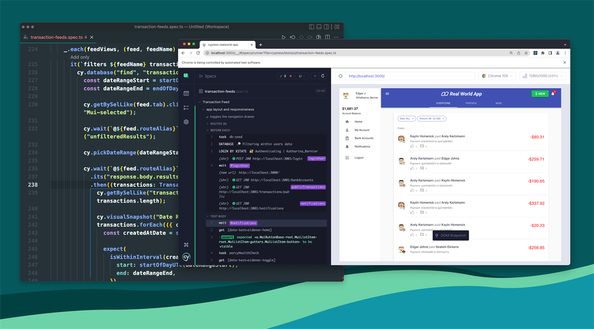

Production specs stay private. This public sample shows the same habits: data-testid locators, intercepts for network control, fixtures, and API assertions.
Full files live in samples/cypress/ in this repository so reviewers can read
them without a Cypress install.
UI login with a stubbed token
describe("Login", () => {
it("lands on the dashboard when credentials are valid", () => {
cy.intercept("POST", "/api/login", {
statusCode: 200,
body: { token: "test-token", role: "player" },
}).as("login");
cy.visit("/login");
cy.get('[data-testid="email"]').type("qa.player@example.com");
cy.get('[data-testid="password"]').type("CorrectHorseBattery");
cy.get('[data-testid="submit"]').click();
cy.wait("@login").its("request.body").should("include", {
email: "qa.player@example.com",
});
cy.location("pathname").should("eq", "/dashboard");
cy.contains("h1", "Dashboard").should("be.visible");
});
});API CRUD smoke
describe("Wallet API", () => {
it("creates, reads, and deletes a ledger note", () => {
cy.request("POST", "/api/notes", { text: "promo credit" }).then((create) => {
expect(create.status).to.eq(201);
const id = create.body.id;
cy.request("GET", `/api/notes/${id}`).its("body.text").should("eq", "promo credit");
cy.request("DELETE", `/api/notes/${id}`).its("status").should("eq", 204);
});
});
});